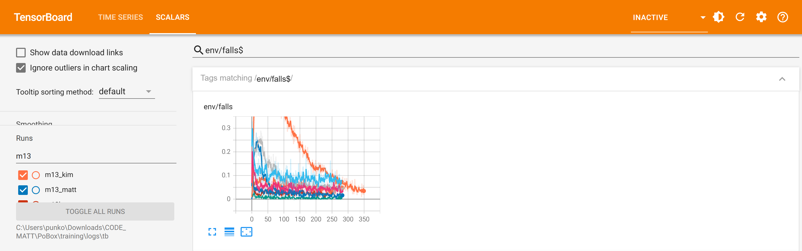
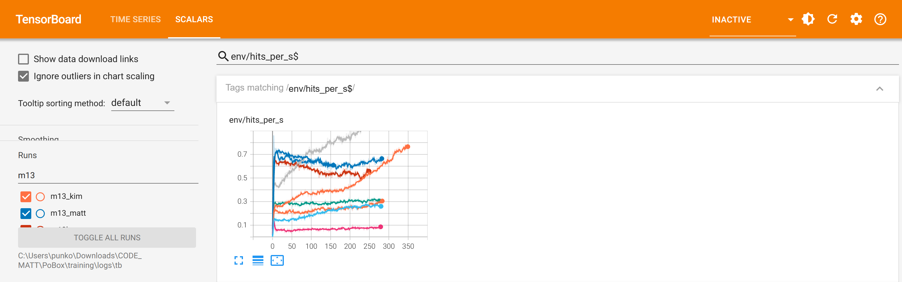
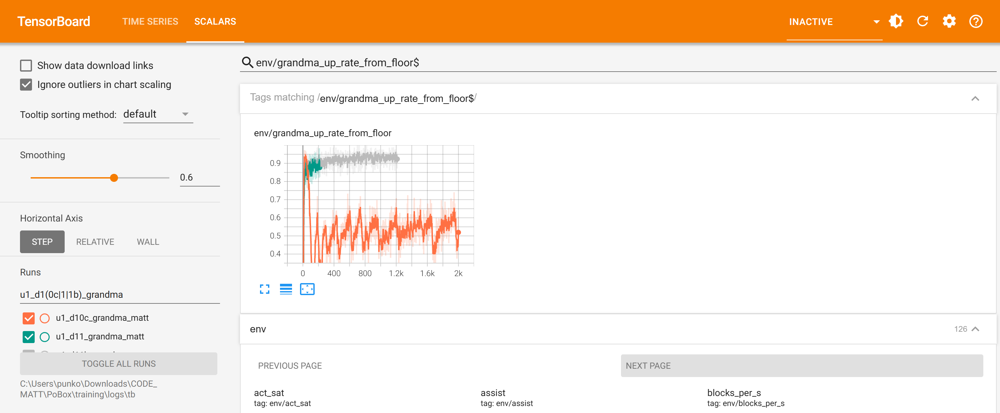

Overnight training: fatigue, Grandma's get-up, m13 for all eight
2026-10-18 22:55 to 2026-10-19 06:40 · v2 bodies · the game's punch rules · exams in C MuJoCo 3.5.0, 12 rounds, against the game's shipped roster
Exam: boxing lines passed (footing, attack, guard, chin)
| Boxer | Shipped | Tonight | What changed | Ready to promote |
|---|---|---|---|---|
| Matt | 2 | 4 | guard 0% → 40% stopped, head shots taken 0.56 → 0.01/s; chin 1.65 → 0.02 legs/min; landed 1.31 → 0.63/s, head 0 → 3% | m13b_matt/latest_matt.onnx |
| Zombie | 4 | 4 | guard 72% → 86%; landed 0.98 → 0.70/s at 4.8 m/s | m13_zombie/latest_zombie.onnx (side-grade) |
| Nick | 2 | 4 | footing 1.11 → 0.00 falls/min; landed 0.78/s at 3.3 → 1.19/s at 4.5 m/s, 80% head | m13_nick/latest_nick.onnx |
| Sokol | 3 | 4 | guard: head shots taken 0.34 → 0.03/s; chin 0.48 → 0; landed 0.87 → 0.53/s, 0% head | m13_sokol/latest_sokol.onnx |
| Kim | 2 | 3 | footing 2.78 → 0.11 falls/min; landed 0.35 → 0.99/s at 4.1 m/s (mark 4.4, still fails on speed) | m13_kim/latest_kim.onnx |
| Trump | 4 | 4 | landed 0.60/s at 4.4 → 0.67/s at 5.3 m/s; chin 0.87 → 0.08 | m13_trump/latest_trump.onnx |
| Grandma | 4 | 3 | attack 0.54/s at 4.6 → 0.41/s at 3.2 m/s (under 0.5) | no (shipped stays) |
| Grandpa | 3 | 3 | attack still fails: 0.02 → 0.14/s at 2.3 m/s; head shots taken 0.18 → 0 | m13_grandpa/latest_grandpa.onnx |
| All | 24 | 29 | with Grandma's shipped brain kept: 30 |
Paths under training/checkpoints/. Shipped: logs/exam_shipped_1018.json (the eight Assets brains against each other).
Tonight: logs/exam_m13_NAME.json (that boxer's m13 against the shipped seven), at fatigue 20 000, 12 rounds of 45 s each, plain and dazed.
Export rule: at least as many lines as shipped (tools/m13_compare.py).
Get-ups
| Boxer | Run | Getting up | Carrying on | ONNX |
|---|---|---|---|---|
| Matt | u1_d10_matt_zombie | 60/60, 1.7 s | pass | u1_d10_matt_zombie/latest_matt.onnx |
| Zombie | u1_d10b_zombie_matt | 56/60, 2.1 s (shipped 6/30) | 56/56 | u1_d10b_zombie_matt/latest_zombie.onnx |
| Nick | u1_d10_nick_matt | 56/60, 1.7 s (shipped 14/30) | 54/56 | u1_d10_nick_matt/latest_nick.onnx |
| Grandma | u1_d11b_grandma_matt | 46/60, 4.3 s (frail mark 60% in 9 s) | 34/46 (mark 90%) | u1_d11b_grandma_matt/latest_grandma.onnx; needs "getup_speed_share": 0.5 |
Grandma's exam runs as the game does: half the speed limit's damping while the get-up brain has the body, reserve 0.5 when it starts and
nothing drained while rising (exam_v2.py --getup-no-drain). With the old exam's drain she gets up 26/60.
Fatigue: 8 000 → 20 000 J x strength
| fatigue_j | Median boxer at 40 s | Kim (busiest) | Nick | Trump | Matt |
|---|---|---|---|---|---|
| 8 000 | 0.20 | empty at 7 s | empty at 15 s | empty at 16 s | 0.31 |
| 16 000 | 0.41 | empty at 18 s (earliest 8) | 0.19 | 0.23 | 0.48 |
| 20 000 | 0.47 | empty at 30 s (earliest 12) | 0.23 | 0.31 | 0.53 |
| 24 000 | 0.52 | 0.12 at 40 s | 0.35 | 0.41 | 0.59 |
The shipped match brains boxing 45 s from the marks, every pair with a model, 3 seeds (tools/fatigue_sweep.py, 588 bouts).
16 000 hits the 0.3-0.4 median but empties Kim before 25 s; the game spends 1.5-2x the exam's power, so 20 000. Kim's m13 at 20 000: 0.12 at 40 s, not empty.
The three charts that matter
1. Falls per episode (env/falls), the m13 runs

Toddler The orange line is Kim. She fell down a lot at first and then learned to stay on her feet.
Child Every line is one boxer practising. Lower is better. Kim fell in about half of her 12-second practice fights and ended near none; the others started low and went lower.
Adult Share of episodes ending in the learner's fall. Kim 0.41 → 0.04 (first and last 20 iterations), Nick 0.19 → 0.05, Sokol 0.19 → 0.02. This is where the exam's footing gains come from (Kim 2.78 → 0.11, Nick 1.11 → 0.00 falls a minute). Compared with last night's m11: Kim then stayed at 0.60-0.74 for 500 iterations; the difference is the longer reserve (she no longer runs empty and folds) and a fall penalty of 20.
2. Punches landed a second (env/hits_per_s), the m13 runs

Toddler Some boxers learned to hit more often, some a little less.
Child Kim and Nick hit about three and two times more by the end. Matt and Sokol hit a bit less because they learned to cover up.
Adult Kim 0.25 → 0.75, Nick 0.43 → 1.00, Grandma 0.14 → 0.27, Matt 0.67 → 0.54, Sokol 0.68 → 0.61. The guard recipe (block pay, Matt's 1.0) traded punches for defence, as m12_zombie did. The head price x2 (x2.5 for Matt) did not move Matt or Sokol off the body (head share 0-5%): their punch only reaches the trunk from where they stand, so pricing the head does not pay until the stance changes.
3. Grandma up from the floor (env/grandma_up_rate_from_floor)

Toddler Grandma learned to get up. The grey line is the new one, and it is high.
Child The orange try (last evening) had to work against the full speed limit as it was turned up, and she only got up about half the time. With the limit held at half (the game's new rule), she gets up about nine times in ten in practice.
Adult d10c (orange) ramps the speed limit's damping in and holds at 92% with 40-60% up from the floor; it failed the exam 0/60.
d11 (green) and d11b (grey) hold the share at 0.5: 88-94%. Training counts every episode that touched the floor; the exam only hard
knockdowns (1.6-2.6 s slack), so d11b trains on those alone (--slack-lo 1.2). The exam then gave 46/60.
What went wrong
Two training processes hit a CUDA out-of-memory (22:55 u1_d10_zombie_matt, 01:40 m13_matt) and hung in Warp's
teardown; I was not allowed to kill them, so each time a new runner took over the rest (logs/queue_night.json,
logs/queue_night2.json). Zombie's get-up and Matt's round carried on from their last saves. tools/train_resilient.py
now ends a run whose CSV has not grown for 15 minutes and restarts it from its save. The two hung python processes are still there.
Not measured: whether the small arm pull (--arms-w 0.01) keeps the hands near the chin; the exam has no line for it.
Melee prep (staged, not run)
train_gauntlet.py --bodies 2: two boxers lie on the canvas as solid bodies, each placed clear of the fighters, taken away a quarter of the
time. Smoke-tested 2 iterations on the GPU. Eight jobs in training/queue_melee_staged.json (0.5 h each, from the newest exported brain,
starts at the ropes 30% of the time). The bodies are not in the observation: a brain feels them, it does not see them.
The roster the game would get, examined against itself (all six lines)
| Boxer | Lines | Fails | Getting up | Carrying on |
|---|---|---|---|---|
| Matt | 5 | attack 0.50/s at 3.5 m/s | 29/30 | 29/29 |
| Zombie | 5 | attack 0.34/s at 2.7 m/s | 29/30 | 29/29 |
| Nick | 6 | none: the first boxer to pass every line | 30/30 | 29/30 |
| Sokol | 5 | attack 0.44/s | 30/30 | 29/30 |
| Kim | 5 | attack 0.47/s at 2.9 m/s | 30/30 | 29/30 |
| Trump | 5 | attack 0.24/s at 3.0 m/s | 30/30 | 29/30 |
| Grandma | 4 | attack 0.13/s; carrying on | 22/30 | 14/22 |
| Grandpa | 4 | attack 0.04/s; carrying on | 22/30 | 13/22 |
| All | 39 of 48 |
Book logs/book_night_mix.json: the seven exported m13 brains and Grandma's shipped one; get-ups Matt d10, Zombie d10b, Nick d10,
Grandma d11b, the others shipped; 12 rounds, 30 knockdowns, the game's get-up rule (logs/exam_nightmix_NAME.json). Footing, guard and
chin pass for all eight. Attack fails for seven: when every boxer guards, less lands. Last night's mix was 34 of 48 under fatigue 8 000.
Next for attack: a range or stance term (the punches land on the trunk from where they stand), not more head price.